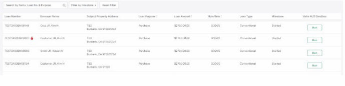

Dual AUS Features
Dual AUS (Automated Underwriting System) is a sophisticated tool used in the mortgage industry to streamline the loan approval process. By simultaneously running both Fannie Mae's Desktop Underwriter (DU) and Freddie Mac's Loan Process Advisor (LPA), Dual AUS provides lenders with comprehensive risk assessments, helping them make informed decisions about loan approvals.
To know more about Dual Aus click here.
Loan Display Criteria
Loan Display criteria states that Loan should be in prospect or in active folder.
Loan Lock
- When a loan is locked, a lock icon will be displayed in the pipeline view.
- If the loan lock status changes while viewing the pipeline, users must refresh the page to update the lock status.
- When a loan is locked, clicking on the run button will redirect users to the previous submission tab.
- If a loan is locked by the admin and a user attempts to run a scenario, a popup message will appear displaying "The loan {loan number} is locked by {user}. Please try again once the loan is unlocked."
